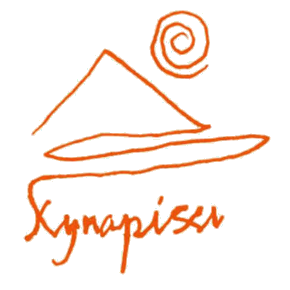
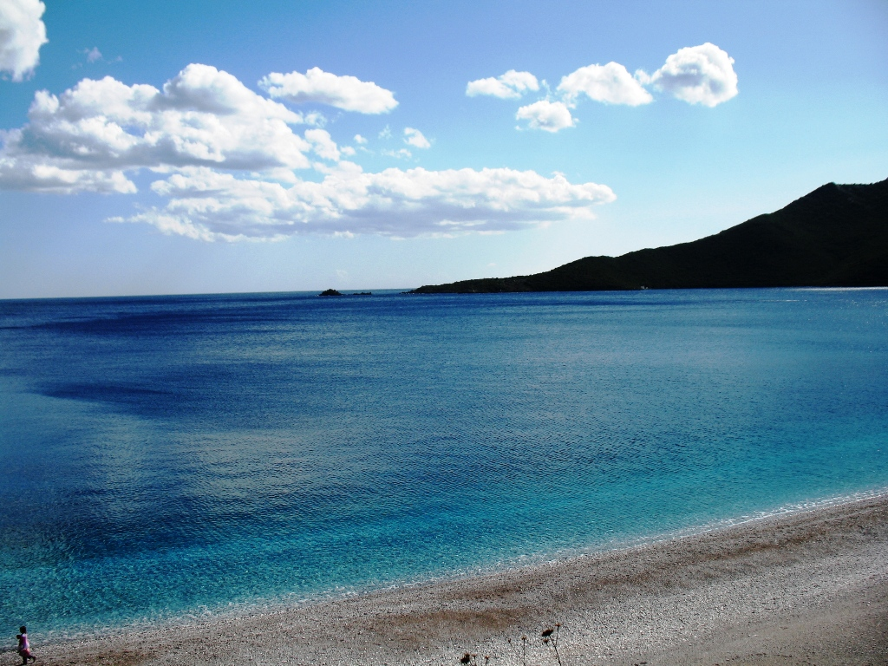
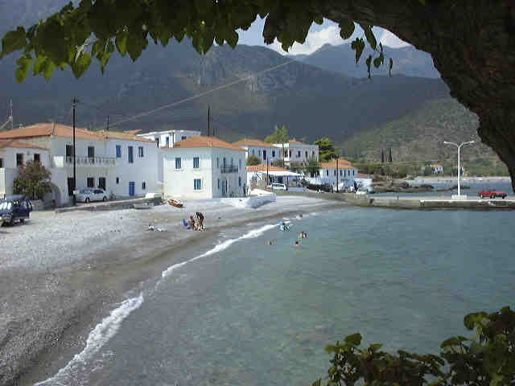
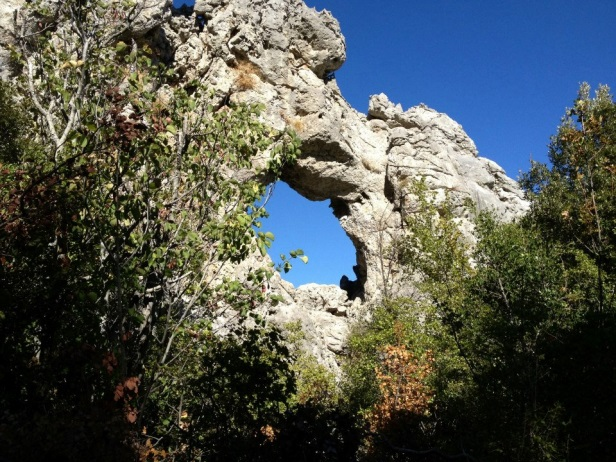
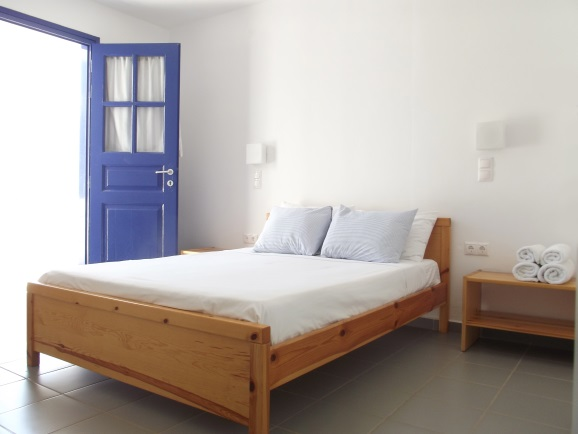
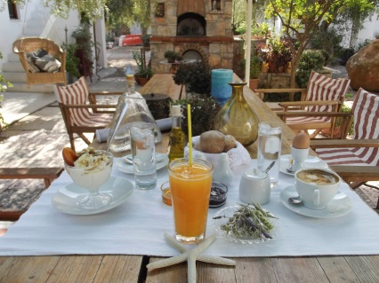

<meta charset="utf-8">
<meta name="viewport" content="width=device-width, initial-scale=1">
<title>Retreats | Bruce Greenhalgh</title>
<meta name="description" content="The Kyparissi Retreat in the Peloponnese, Greece — dates, venue, accommodation, daily programme, and booking details.">
<link rel="preconnect" href="https://fonts.googleapis.com">
<link rel="preconnect" href="https://fonts.gstatic.com" crossorigin>
<link href="https://fonts.googleapis.com/css2?family=Poppins:wght@500;600;700&family=Nunito+Sans:wght@400;600;700&display=swap" rel="stylesheet">
<link rel="stylesheet" href="css/style.css">

<header class="site-header">
  <div class="header-inner">
    <a href="index.html" class="wordmark">Bruce Greenhalgh</a>
    <nav class="main-nav">
      <ul>
        <li class="nav-item"><a class="nav-link" href="about.html">About</a></li>
        <li class="nav-item">
          <a class="nav-link" href="individuals.html">Individuals</a>
          <div class="mega">
            <a href="individuals.html#therapy">Therapy &amp; Counselling</a>
            <a href="individuals.html#mindfulness">Mindfulness</a>
            <a href="individuals.html#retreats">Retreats</a>
            <a href="individuals.html#supervision">Supervision</a>
          </div>
        </li>
        <li class="nav-item">
          <a class="nav-link" href="organisations.html">Organisations</a>
          <div class="mega">
            <a href="organisations.html#mental-health">Mental Health</a>
            <a href="organisations.html#wellbeing">Wellbeing</a>
            <a href="organisations.html#keynotes">Keynotes &amp; Speaking</a>
            <a href="organisations.html#crisis">Crisis &amp; Resilience</a>
            <a href="organisations.html#retreats-offsites">Retreats &amp; Offsites</a>
            <a href="organisations.html#training">Training</a>
          </div>
        </li>
        <li class="nav-item"><a class="nav-link" href="contact.html">Contact</a></li>
      </ul>
    </nav>
    <div class="header-right">
      <div class="social-icons">
        <a href="#" aria-label="Facebook">f</a>
        <a href="#" aria-label="Instagram">◎</a>
        <a href="#" aria-label="LinkedIn">in</a>
      </div>
      
    </div>
    <button class="nav-toggle" aria-label="Toggle navigation" aria-expanded="false">
      <span></span><span></span><span></span>
    </button>
  </div>
</header>

<main>
  <section class="hero" style="background-image: url('images/kyparissi-waterfront.png');">
    <p class="hero-tagline">Mindful Consultant Services</p>
    <div class="hero-title"><h1>Retreats</h1></div>
  </section>

  <div class="retreat-title-band">
    <div class="container" style="display:flex; flex-wrap:wrap; align-items:center; justify-content:space-between; gap:1rem;">
      <h2>Kyparissi Retreat</h2>
      <div class="dates">22-30 May 2027 &middot; 30 May &ndash; 7 June 2027 &middot; 18-26 Sept 2027 &middot; 26 Sept &ndash; 4 Oct 2027</div>
    </div>
  </div>

  <div class="retreat-section">
    <div class="container">
      <h3>About the Retreat</h3>
      <p>The Retreat is held in the village of Kyparissi on the East coast of the Peloponnese. The village is surrounded by mountains and lapped by the Aegean Sea. There are walks to be taken, mountains to climb, beaches to lie on and bars-cum-coffee shops to sit and muse in.</p>
      <p>The environment and community provide a unique opportunity to combine experiential development and recuperation in a tranquil authentic Greek village. Eating tasty local cuisine, vegetarian or meat dishes, in local tavernas.</p>
      <p>The programme has been designed to enhance connectivity with your deeper self, others and with nature whilst (re)balancing and &lsquo;being&rsquo; present. All within a remote Greek village community, this is not a silent retreat. Using the tools of mindfulness, dramatherapy and connecting with the body, the retreat aims to provide an opportunity to cultivate a positive attitude, refurbish your health, enhance your happiness and warm your soul.</p>
      <p>We will also provide plenty of opportunity to experience the elements through walks under the gaze of the mountains, swimming in the crystal-clear waters of the Aegean or just &lsquo;being&rsquo; under the olive trees. At night you will be spellbound by the stars and by day touched by the breath-taking scenery.</p>

      <h3>Workshop Venue</h3>
      <p>The Venue for the retreat is Kyfanta Hotel, <a href="http://kyfanta.com/">http://kyfanta.com/</a>.</p>
      <p>The hotel is run by its owners, Esther Grau and Yiannis Rovatsos. Esther was born in Catalonia but has long since succumbed to the charms of Kyparissi. She speaks Greek, Spanish, English, French and Italian fluently! Yiannis was born and raised in Kyparissi, speaks English and knows the locality inside and out. Esther and Yiannis opened the hotel in 1990, beginning with five attractive, tasteful rooms for rent.</p>
      <p>In 2010 they added two small buildings, and, at the same time, radically renovated the original building. The workshops will be held on site in a separate room with full amenities, has a roof top terrace from which you can view the sea and the mountains. It leads out on to a courtyard full of olive trees providing shade during the day.</p>

      <h3>Accomodation</h3>
      <p>KYFANTA is a three-star hotel with 15 bright, airy studios and apartments with air conditioning, kitchenette, television, Wi-Fi, internet access, telephone and private balconies giving spectacular views of the sea and the mountains. The rooms all have showers and enjoy a minimalistic style with cool tiles for flooring and a simple Greek feel. Each participant has their own apartment.</p>

      <h3>Meals</h3>
      <p>Breakfast &amp; lunch will be provided. Breakfast will be provided at Kyfanta and will be traditionally Greek including fresh fruit, orange juice, bread, eggs, yoghurt &amp; honey. Lunch will be at one of the local tavernas (2-minute walk away) with a choice of meat or vegetable base and is Greek village cuisine (very tasty). Evening meals will be available at any of the many Kyparissi tavernas and are priced to suit all pockets.</p>

      <h3>Daily Programme Format</h3>
      <p>An example of the daily programme during the training</p>
      <table class="schedule-table">
        <tbody>
          <tr><td>08.00 - 09.00</td><td>Breakfast</td></tr>
          <tr><td>09.15 &ndash; 11.15</td><td>Mindfulness</td></tr>
          <tr><td>11.15 - 11.30</td><td>Break</td></tr>
          <tr><td>11.30 - 13.15</td><td>Body: Activities, walks, swims, snorkelling etc. all are optional</td></tr>
          <tr><td>13.15 - 14.30</td><td>Lunch</td></tr>
          <tr><td>14:30 &ndash; 17:00</td><td>Free time</td></tr>
          <tr><td>17.00 - 19.00</td><td>Dramatherapy/ Workshop</td></tr>
        </tbody>
      </table>

      <h3>Evenings</h3>
      <p>There are numerous bars, coffee shops, tavernas to explore and previous gatherings have often seen groups meet at different tavernas around the village to experience the diversity and choice. At night it can be an experience to behold to gaze at the stars without light contamination whilst listening to the sea at the same time. Below is a picture of Kyparissi from nearby mountains with Islands in the distance.</p>

      <h3>Retreat Workshops</h3>
      <p>The unique combination of Kyparissi and the retreat format provides the space, the location, the environment, the community, the structure, and the teachings to enable each participant to enhance their capacity to better navigate their individual challenges. Whether a novice or experienced the retreat will be facilitated in such a that you will be able to progress at your pace and to your depth. Where there is stress there will be calm, where there is confusion there will be clarification, where there is hurt there will be healing, where there is loss there will be adjustment and where there is impasse there will be movement.</p>
      <p>The mindfulness teachings are woven into the morning sessions to prepare each person to play with and integrate the concepts into the next session focusing on the body and soul, which in turn supports the unfolding of the process in the final session. To maintain the intimacy and uniqueness of the retreat we cap the participants to 10 max.</p>

      <h3>The Surroundings</h3>
      <p>The photos don't do justice to the surroundings. there are a range of opportunities in Kyparissi to relax or tax the body. From simply lying back and floating in the sea or reclining under a tree at one end of the spectrum, to climbing one of the local rock faces or exploring the surrounding mountains at the more demanding end.</p>
      <p>The mountains surrounding Kyparissi contain the Babala plateau. There will not be time to walk up it during the week but for those who stay on and feel adventurous the rock formations situated there need to be seen to be believed.</p>
    </div>
  </div>

  <div class="booking-panel">
    <div class="container" style="display:grid; grid-template-columns: 220px 1fr; gap:2rem; align-items:start;">
      
      <dl>
        <dt>Cost/bookings:</dt>
        <dd>&euro;775* if paid in cash or &euro;875 including all local taxes if paid by card</dd>
        <dt>Includes:</dt>
        <dd>Training, 8 nights' accommodation with breakfasts &amp; 5 lunches</dd>
        <dt>For more information:</dt>
        <dd>Contact bruce@brucegreenhalgh.com or +44 07850 709136, or request a brochure</dd>
        <dt>Venue Details:</dt>
        <dd>Kyfanta <a href="http://kyfanta.com/">http://kyfanta.com/</a> &mdash; Kyparissi, Laconia, Greece<br>
        Ester Grau kyfantahotel@gmail.com<br>
        +30 694 552 1511 (mobile), +30 27320 55356 (landline)</dd>
      </dl>
    </div>
  </div>

  <div class="retreat-gallery">
    
    
    
    
    
    
  </div>
</main>

<footer class="site-footer">
  <div class="container">
    <div class="footer-grid">
      <div class="footer-col">
        <h4>Quick Links</h4>
        <ul>
          <li><a href="about.html">About Bruce</a></li>
          <li><a href="retreats.html">Retreats</a></li>
          <li><a href="contact.html">Contact</a></li>
        </ul>
      </div>
      <div class="footer-col">
        <h4>Individual</h4>
        <ul>
          <li><a href="individuals.html#therapy">Therapy &amp; Counselling</a></li>
          <li><a href="individuals.html#mindfulness">Mindfulness</a></li>
          <li><a href="individuals.html#retreats">Retreats</a></li>
          <li><a href="individuals.html#supervision">Supervision</a></li>
        </ul>
      </div>
      <div class="footer-col">
        <h4>Organisations</h4>
        <ul>
          <li><a href="organisations.html#mental-health">Mental Health</a></li>
          <li><a href="organisations.html#wellbeing">Wellbeing</a></li>
          <li><a href="organisations.html#keynotes">Keynotes &amp; Speaking</a></li>
          <li><a href="organisations.html#crisis">Crisis &amp; Resilience</a></li>
          <li><a href="organisations.html#retreats-offsites">Retreats &amp; Offsites</a></li>
          <li><a href="organisations.html#training">Training</a></li>
        </ul>
      </div>
      <div class="footer-col footer-brand">
        
        <div>
          <h4>Bruce Greenhalgh</h4>
          <a href="index.html">brucegreenhalgh.com</a><br>
          <a href="mailto:bruce@brucegreenhalgh.com">bruce@brucegreenhalgh.com</a>
          <p class="meta">&copy; 2026 Bruce Greenhalgh. All rights reserved.</p>
        </div>
      </div>
    </div>
    <div class="footer-bottom">
      <a href="contact.html">Contact</a>
      <a href="privacy-policy.html">Privacy Policy</a>
      <a href="terms.html">Terms &amp; Conditions</a>
      <a href="affiliate-disclosure.html">Affiliate Disclosure</a>
    </div>
  </div>
</footer>

<script src="js/script.js"></script>
